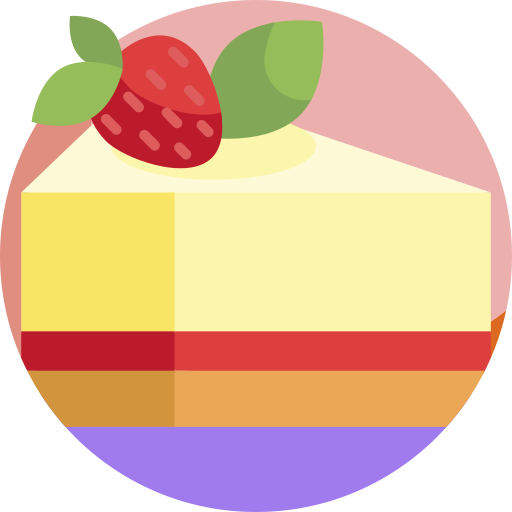

|  Historia de los Postres |
El postre es el plato de sabor dulce o agridulce que se toma al final de la comida, o de merienda. Cuando se habla de postres se entiende alguna preparación dulce, bien sean cremas, tartas, pasteles, helados, bombones, etc. Por extensión se denomina postre a cualquier comida dulce incluso si su objetivo no es ser ingerida al final de la comida. Algunos ejemplos son las galletas , chocolates y magdalenas.
Los postres han sido siempre el broche de oro de una comida. Un buen postre, resaltará la satisfacción de los alimentos anteriores. En muchos casos se planean como una agradable sorpresa, pero realmente constituyen también un complemento importante al aporte de nutrientes en la alimentación diaria. Contienen elementos nutritivos como frutas, leches, huevos y elementos energéticos como azúcares y grasas. Hay postres que se preparan al momento o con anticipación, con el fin de agradar al paladar ya que existen postres en todas las temperaturas y texturas (al tiempo, calientes, fríos, helados y mixtos).
Importante es considerar en estos días que los postres son de gran aportación calórica y energética por lo que también se han diseñado en la actualidad gran variedad de postres que han logrado cambiar ingredientes por algunos con menos riesgos para la salud. Ejemplo de ello son los que incluyen menos grasas, o bien frutas naturales, ingredientes sin refinar o azúcares sustitutas para evitar enfermedades como la diabetes mellitus o gordura.
A pesar de que los romanos hayan llegado a nuestros días como los responsables de que culminemos las comidas con la tradición de tomar postre, parece ser que el postre más antiguo que disfrutamos hoy en día tiene su origen mucho antes de este imperio. Y es que el origen de la tarta de queso se sitúa en el año 776 a.C., concretamente, en la Antigua Grecia. Según la historia, los atletas que acudieron a los primeros Juegos Olímpicos habrían sido los afortunados en conocer, en primicia, este exitoso postre, como parte de un menú degustación del evento. Esto hace pensar que, quizás, la tarta de queso, no surgiera como un postre.